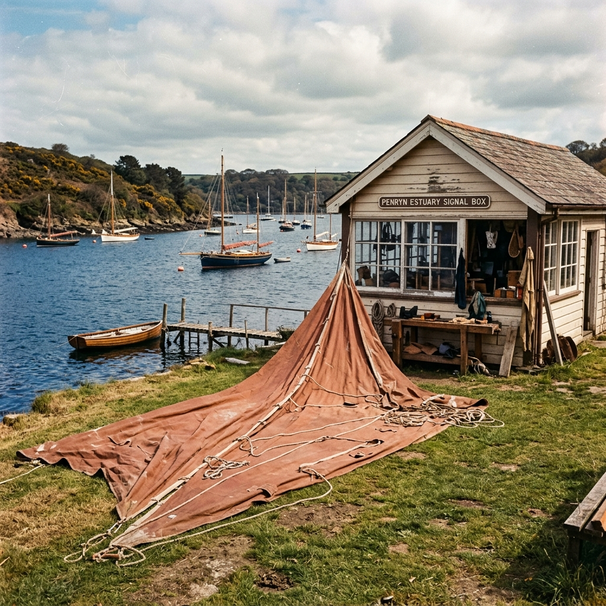

Hull & Hem Sailmenders
Hull & Hem Sailmenders
Torn sails posted in. Ocean-ready sails posted back.
A working sail loft run out of a Cornish signal box, mending gaff mainsails, storm jibs and cruising genoas for skippers who want the old stitch back.

We are a two-bench repair loft on the Hayle estuary, west of St Ives. Skippers post us their tired sails in a canvas kit bag, we work them over on a 1954 Singer 45K, and we return them within fourteen days with the Ellery double-run finish on every seam. There is no shopfront, no franchise, and no chandlery mark-up. Just Marta, an apprentice called Rob, and a kettle that rarely goes cold.
The signal box at Lelant Saltings
The loft sits inside the old Great Western Railway signal box at Lelant Saltings, a timber cabin that stopped controlling trains in 1978 and spent thirty years empty. Marta took the lease in 2011 after four seasons at a commercial loft in Falmouth, where she watched decent cruising sails get written off because a repair would not clear the yard's minimum charge. Her rule from day one: no minimum charge, and no sail turned away for being old.
The building suits the work. It is long and narrow, with south light along one wall and a nine-metre run of cutting bench down the other. The Singer sits on the original signalman's desk, bolted through to the joists. Sails come in through the lever-frame door, which still has the levers, and go out through the same door in reused kit bags stamped with the box's old GWR frame number, 47.
The repair-by-post workflow
The traditional model of sail repair usually involves dragging heavy, wet canvas to a local marina, waiting weeks for an opening in the schedule, and paying a premium for the convenience of dropping it off. We have entirely replaced that friction with a streamlined postal system that brings the loft directly to your boat, no matter where she is moored or wintered.
When you contact us, we provide a prepaid heavy-duty shipping label. You simply fold your sail loosely into a sturdy bag or box and hand it to the postman. Once it arrives at Lelant Saltings, it is immediately placed on the cutting bench for a thorough, photographed inspection. We send you the high-resolution images alongside a firm, itemised quotation for the necessary repairs. We do not unspool a single yard of thread until you have reviewed the assessment and given us explicit permission to begin the work.
This transparent process ensures there are never any unexpected costs or unauthorized modifications. From the moment you approve the quote, the fourteen-day clock begins. We clean, dry, repair, and reinforce the sail, packing it securely into one of our stamped canvas return bags. It is then dispatched via tracked courier, arriving back at your door ready to be bent on for the next season.
The Bosun's Quarterly Box preview
Beyond our bespoke repair services, we also support skippers who prefer to handle their own running maintenance while underway. We created the Bosun's Quarterly Box as a reliable resupply system, delivering professional-grade materials directly to your home or marina four times a year. It ensures you always have the right supplies on hand before a minor chafe turns into a major tear.
Each box is carefully curated by Marta to align with the demands of the upcoming season. We do not pack it with cheap filler or unnecessary gadgets. Instead, you receive the exact heavy Dacron patches, waxed Barbour thread, hand-forged needles, and pure beeswax that we use daily on our own benches. We also include a detailed, hand-drawn repair card that highlights common failure points to check during that specific time of year.
Whether you are laying up for the winter, fitting out for spring, or preparing for an extended offshore passage in late summer, the Quarterly Box provides the peace of mind that comes from being genuinely self-sufficient. It is a working toolkit designed by professional sailmakers for serious cruising sailors.
Testimonials from working skippers
Our reputation is built entirely on the skippers who trust us with their crucial canvas. We do not pay for advertisements; we rely on the word passed across the pontoons and over the VHF radios of coastal cruisers and working boats around the country.
"I tore the clew clean out of my mainsail in a blow off the Lizard. I bundled the entire ruin into a mail sack and sent it to Marta. Within three days she sent me a comprehensive plan, and less than a fortnight later I had the sail back. The repair is monstrously strong, using proper heavy tanbark and an enormous amount of hand stitching. The quality of the Ellery double-run is simply unmatched by modern lofts."
12 days door-to-door, Falmouth to Lelant and back.
"My genoa had seen seven tough seasons and the foot was chafed to threads. Most places told me to throw it away and buy a new one, which I flatly refused to do. Hull & Hem rebuilt the entire foot section, reinforced the tack with heavy leather, and gave it a completely new lease on life. It sets beautifully now. I wouldn't trust anybody else with my canvas after seeing the care they took."
14 days door-to-door, Lymington to Lelant and back.
"When you are running a sail-training vessel, reliability is the only currency that matters. We put our heavy-weather sails through intense abuse. We sent a badly blown storm jib to the signal box. The stitching was so immaculate, the thread so thick and well-waxed, that we immediately pulled all our working sails and sent them down for a preventative overhaul. They understand exactly how traditional heavy canvas behaves under serious load."
Turnaround on five heavy sails completed in 18 days.
Questions about the post
We understand that putting your heavy cruising canvas into the postal system can feel daunting. Below we address the most common concerns skippers raise before sending a bag down to Cornwall.
What happens if my sail is beyond repair?
If we inspect the canvas on the bench and determine that the cloth is fundamentally rotten, delaminating, or compromised beyond safe repair, we will immediately inform you. We charge absolutely nothing for the inspection. We can either arrange to safely dispose of the old sail for you, or we will post it back to you at cost.
Are you insured while my sail is at the loft?
Absolutely. From the moment the postmaster scans your package into the Royal Mail system until it is safely back in your hands, the sail is covered. Our public liability and goods-in-trust insurance through Topsail covers your canvas up to a replacement value of £10,000 while it resides in the signal box.
Do you take synthetic and traditional cloth?
Yes. Although we specialise in traditional heavy canvas, tanbark, and natural cotton or flax for heritage vessels, we frequently repair modern Dacron and other woven synthetics. However, we do not repair laminate racing sails, spinnakers, or exceptionally lightweight modern racing cloths, as our heavy needles and wax methods are unsuitable for them.
Can you match tanbark colour on a faded sail?
We keep three distinct shades of tanbark Dacron on the shelf, sourced directly from Clipper Canvas. When repairing an old, UV-faded sail, we will select the shade that blends best, but we will not artificially weather new cloth. A visible, honest repair in a slightly richer red is a mark of a well-maintained working boat.
What's the largest sail you can handle?
The signal box is long but narrow. We can comfortably handle mainsails and genoas for boats up to 40 feet in length on our nine-metre bench. Anything larger than that becomes extremely difficult to maneuver under the throat of the Singer 45K. If your boat is over 40 feet, please email us the sail dimensions first.
Do you ship outside the UK?
We do handle international work, particularly for traditional boats based in Northern Europe, the Netherlands, and France. However, international shipping of heavy sails is expensive and requires custom quoting. We use reliable international couriers, but transit times will naturally extend beyond our standard fourteen-day guarantee. Please contact us to discuss logistics.